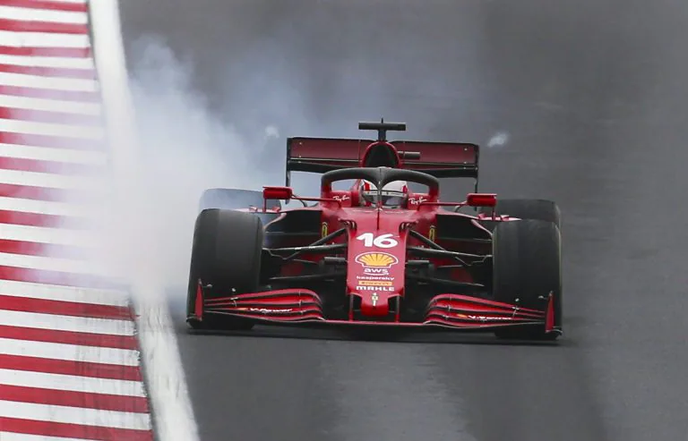
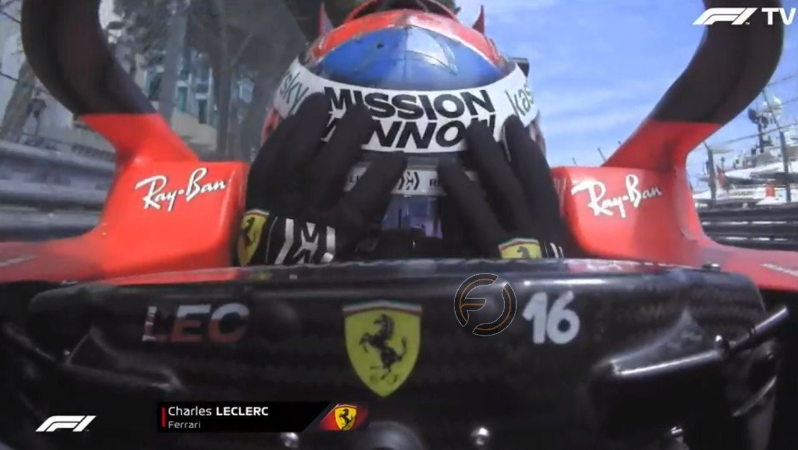

Charles Marc Hervé Perceval Leclerc è nato a Monaco il 16 ottobre 1997, è un pilota automobilistico monegasco, attivo in Formula 1 con la Ferrari. Campione della GP3 2016 e della Formula 2 2017, ha fatto parte dal 2016 al 2018 della Ferrari Driver Academy e nel 2018 ha corso in Formula 1 per la Sauber, passando dal 2019 in forza alla scuderia italiana. È il primo pilota monegasco ad aver vinto un Gran Premio di Formula 1, nonché il pilota più giovane della storia ad aver vinto un Gran Premio al volante di una vettura della scuderia di Maranello. Il suo numero di gara è il 16.  Nel marzo 2016, Ferrari annunciò che Leclerc sarebbe stato uno dei due nuovi piloti inseriti nel Ferrari Driver Academy (di cui anche Bianchi faceva parte) e che sarebbe diventato collaudatore di Haas e della stessa Ferrari. Proprio nelle vesti di collaudatore, partecipa alla prima sessione di prove libere del Gran Premio di Gran Bretagna dello stesso anno guidando la monoposto della squadra statunitense. Il 9 maggio 2016 prova la Ferrari F14 T sul circuito di Fiorano: compie 300 chilometri, necessari per l'ottenimento della Superlicenza FIA. Ad agosto del 2017, Leclerc esegue la prima giornata di test a Budapest a bordo della SF70H con la Scuderia Ferrari ottenendo il miglior tempo di giornata. Sempre nello stesso mese guida ancora una volta per la Ferrari nei test Pirelli 2018. Il 22 settembre 2017 viene ufficializzata la sua partecipazione a 4 sessioni di prove libere del campionato 2017 con la Sauber. Il 29 settembre seguente svolge la prima sessione di prove sotto la pioggia nel Circuito di Sepang con il team Sauber e finisce la sessione in 16ª posizione, mettendosi alle spalle il compagno Pascal Wehrlein. Nella prima gara stagionale ottiene un 18º posto in qualifica e un 13º in gara, a 20 secondi dalla zona punti. L'11 settembre 2018 la Scuderia Ferrari annuncia che il pilota monegasco, a partire dalla stagione successiva, avrebbe sostituito Kimi Räikkönen, affiancando Sebastian Vettel. Leclerc scende in pista per la prima volta con la sua nuova monoposto, la SF90, nella seconda giornata dei test prestagionali di Barcellona, facendo segnare il primo tempo in classifica giornaliera. Nella prima gara stagionale, in Australia, conclude al quinto posto. Nella gara successiva, il Bahrein, diventa il secondo pilota più giovane nella storia della Formula 1, dopo il compagno di box Vettel, a conquistare una pole position, all'età di 21 anni e 165 giorni; il giorno dopo coglie anche il suo primo podio e giro veloce in Formula 1, concludendo al terzo posto una gara che il monegasco conduce per la maggior parte, salvo poi cedere i due gradini più alti a Lewis Hamilton e Valtteri Bottas a causa di un problema al motore.  Dopo un ritiro all'Hockenheimring sotto il diluvio, e un piazzamento a punti all'Hungaroring, in Belgio ottiene la pole position e, soprattutto, la sua prima vittoria in Formula 1, la prima assoluta per un monegasco nel circus oltreché la prima della stagione per la Ferrari; con tale affermazione, a 21 anni e 10 mesi diventa il più giovane pilota a vincere un Gran Premio con il Cavallino, battendo dopo 51 anni il precedente record di Jacky Ickx. La settimana dopo si ripete in Italia, dove fa registrare ancora pole e vittoria, riportando la Ferrari a trionfare a Monza a 9 anni dalla precedente affermazione di Fernando Alonso. Conquista la partenza al palo anche nei due successivi Gran Premi di Singapore e Russia, poi entrambi conclusi a podio: nell'occasione eguaglia Michael Schumacher come unici piloti di Maranello capaci di ottenere quattro pole consecutive. Dopo tre gare fuori dal podio e un ritiro in Brasile per un contatto con il compagno Vettel, Leclerc torna sul podio nel conclusivo appuntamento di Abu Dhabi con la terza posizione: conclude la sua prima annata in Ferrari al 4º posto con 264 punti e la conquista del Trofeo Pole FIA.